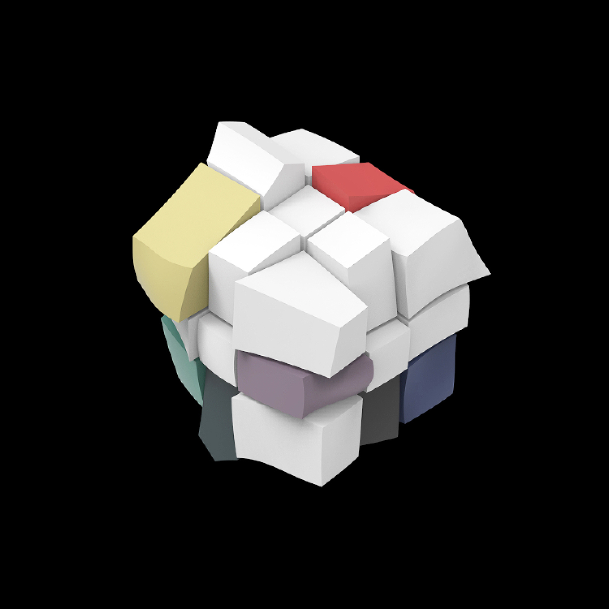

Rubik Cube
This is a experiment on how different scale of view, different perspective of observing will inspire your thoughts.
Try to capture your favorite part of this objects and google search. Test out how google think about it.
Try to capture your favorite part of this objects and google search. Test out how google think about it.
